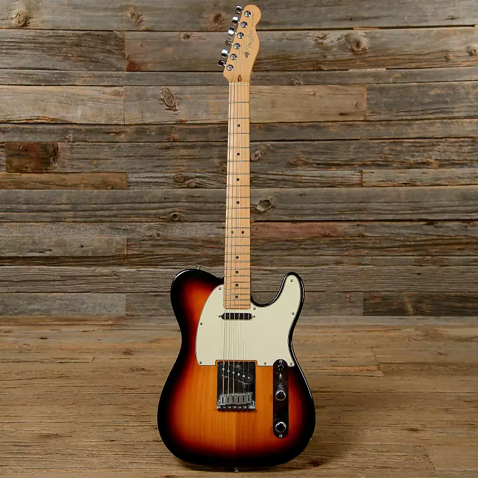

La musique
La musique est l'une de mes plus grande passion, j'en écoute beaucoup, j'ai appris seul à jouer de la guitare séche et récemment j'ai acheté une guitare éléctrique
La musique est l'une de mes plus grande passion, j'en écoute beaucoup, j'ai appris seul à jouer de la guitare séche et récemment j'ai acheté une guitare éléctrique

Je fais de l'escalade depuis peu de temps, j'ai commencé à en faire en 2019, j'ai commencé à faire de l'escalade en salle et j'ai commencé à faire de l'escalade en extérieur en 2020
La musique est une de mes passions depuis mon enfance, j'ai commencé à écouter de la musique à l'âge de 5 ans sur la radio de
Les séries sont une de mes passions depuis mon enfance, j'ai commencé à regarder des séries à l'âge de 5 ans sur la télévision